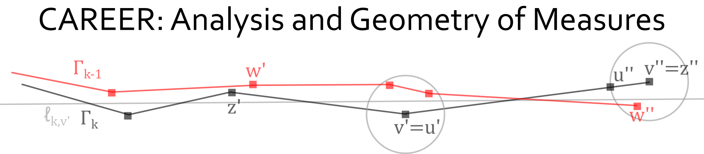

Geometric measure theory is a field of mathematics that evolved from investigations in the 1920s and 1930s into the structure of sets in the plane with finite length. The term "measure" refers to an abstract generalization of length, area, or volume, which assigns a size value to every mathematical set. Traditional outlets for geometric measure theory have expanded in recent decades. The widespread utility and current use of geometric measure theory in different areas of analysis justifies its continued development. The research component of this project seeks to advance our understanding about underlying structures of general measures and to develop new techniques that will expand the toolbox that geometric measure theory provides for researchers in adjacent areas of analysis and geometry. On the educational front, this project will support a network of early career researchers whose research involves nonsmooth analysis, including graduate students and postdoctoral researchers who work in a number areas. Principal activities by the PI include organizing a Workshop for Postdocs in Fall 2017 and a Conference for Graduate Students with Mini-Courses in Spring 2019. The two conferences will be linked: postdoctoral participants from the workshop will be invited to give mini-courses for graduate students in the follow-up conference. The PI will further integrate research and education by organizing an analysis learning seminar and mentoring two postdoctoral researchers at the PI's home institution.
This project focuses on a constellation of questions about the structure of Radon measures in Euclidean space. The underlying theme is that general measures may be understood in terms of their behavior with respect to lower dimensional sets such as finite length curves in the plane and finite area surfaces in space. This point-of-view originated in the 1920s and 1930s through investigations by A.S. Besicovitch, which compared and contrasted properties of finite length sets with properties of rectifiable curves. Later contributions by A.P. Morse and J.F. Randolph, H. Federer, P. Mattila, and D. Preiss from the 1940s through the 1980s produced a rich theory of qualitative rectifiability of measures in Euclidean space that are absolutely continuous with respect to Hausdorff measures; a quantitative theory of rectifiability for Ahlfors regular measures emerged in the 1990s through the work of G. David and S. Semmes. The proposed research seeks to broaden our understanding of different notions of rectifiability of measures in the absence of background regularity hypotheses from past investigations. Specifically, the PI will look for characterizations of Radon measures which are carried by countable families of Hölder continuous curves, Lipschitz graphs, or Lipschitz continuous images of linear subspaces. This goal requires integration of techniques from modern harmonic analysis and quantitative geometric measure theory. The PI will explore approaches based on the PI's work with R. Schul, which characterized Radon measures that are carried by countable families of rectifiable curves, as well as approaches based on G. David and T. Toro's extension of the Reifenberg algorithm and approaches based on K. Rajala's quasiconformal uniformization theorem.
UConn College of Liberal Arts and Science News
Analysis Learning Seminar (Spring 2017 forward)
Nonsmooth Analysis: A Workshop for Postdocs (November 2017)
Geometric and Harmonic Analysis 2019: A Conference for Graduate Students (March 2019)
Last updated: July 12, 2023.